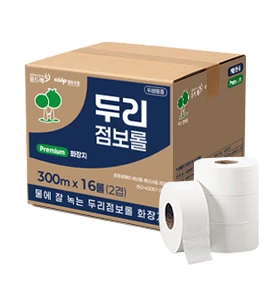
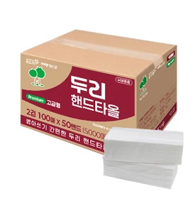
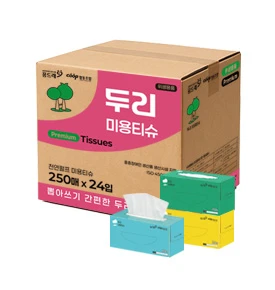
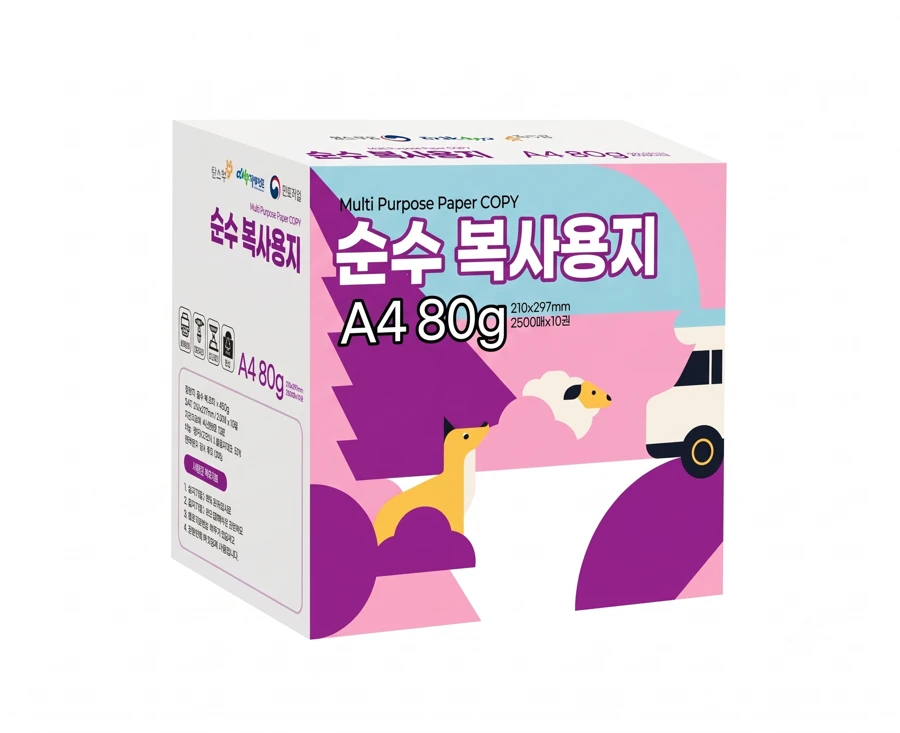

어떤 제품과 작업이 필요한가요?
두리손잡고 제품의 사진과 규격을 살펴보세요. 납품 가능 수량·배송 지역·정기 납품 주기는 품목과 일정에 맞춰 견적에서 확인합니다.



그 밖의 품목·용역
일반 두루마리 화장지, 원두, 방역은 취급 여부와 공급 지역을 먼저 문의해 주세요. 연계고용 적용 여부는 실제 생산·수행 방식과 계약 조건을 확인해야 합니다.
품목별 공급·견적 문의거래액에 따른 감면 예시
민간기업이 한 시설에 2026년 1월부터 12월까지 매달 같은 금액을 지급한 경우입니다. 월 100만 원은 한국장애인고용공단의 예시이며, 50만 원과 200만 원은 거래액만 바꿔 계산한 비교 사례입니다.
도급액 한도부터 보면 연간 지급한 도급액이 1,000만 원이라면 도급액 기준 한도는 그 절반인 500만 원입니다. 산식으로 구한 금액이나 부담금 기준 한도가 더 작으면 실제 감면액도 줄어듭니다.
계산에 사용한 조건
- 시설의 연간 총매출액
- 1억 2,000만 원
- 시설의 월별 인정 장애인근로자 수
- 15명
- 2026년 부담기초액
- 1,295,000원
- 기업의 연간 납부 예정 부담금
- 2,000만 원
공단 사례에서는 경증 근로자 5명과 중증 근로자 5명이 12개월 동안 근무합니다. 중증 근로자를 두 배로 산정해 매월 15명을 인정합니다.
공단 계산방법과 원본 사례 보기우리 회사의 감면 가능 범위 상담
월 100만 원 거래 시 예시 연간 감면액
6,000,000원
- 연간 거래액 월 거래액 × 12개월
- 12,000,000원
- 시설 매출 중 해당 기업의 거래 비율
- 10%
- 연간 감면 산정액 거래 비율 × 인정 인원 × 부담기초액 × 12개월
- 23,310,000원
- 부담금 기준 한도 기업의 연간 부담금 × 90%
- 18,000,000원
- 도급액 기준 한도 연간 지급 도급액 × 50%
- 6,000,000원
연간 산정액과 두 한도 가운데 가장 작은 금액을 적용합니다. 실제 감면액은 매출, 월별 인정 인원, 계약 이행 실적에 따라 달라집니다.
계약부터 감면 신청까지
연계고용은 시설과 기업이 도급계약을 체결하고 실제로 이행한 거래를 기준으로 합니다. 첫 발주 전에 계약 조건부터 확인해 주세요.
필요한 일을 상담합니다
구매할 제품이나 맡길 작업을 시설에 알려주세요. 예상 수량과 견본이 있으면 실제 공정을 검토하는 데 도움이 됩니다.
견적과 납기를 협의합니다
규격, 단가, 발주 주기, 배송지를 맞춰 봅니다. 시설이 직접 생산하거나 수행할 범위와 감면 신청에 필요한 자료도 확인합니다.
도급계약을 맺습니다
규격·수량·공정과 완료일을 정하고, 재료비·노무비 등 계약금액 산출 내역을 도급계약서에 담습니다. 계약 기간은 아래 신청 주체별 기준을 확인하세요.
납품하고 정산합니다
기업이 발주하면 시설이 계약한 제품이나 용역을 제공합니다. 기업은 대금을 지급하고 거래명세서, 세금계산서와 지급 증빙을 납품 내역에 맞춰 보관합니다.
증빙을 정리합니다
담당자는 계약서와 대금 지급 기록을 월별로 정리합니다. 시설에는 계약 기간의 매출액과 월별 장애인 근로자 수를 확인할 수 있는 서류를 요청합니다.
공단에 신청합니다
부담금을 납부하는 기업·기관이 서류를 갖춰 본점 소재지를 관할하는 공단 지역본부나 지사에 제출합니다. 공단이 이행 실적과 적용 요건을 심사해 감면액을 결정합니다.
계약 전 확인 대상 사업장이 다른 사업장에 하도급을 주어 계약을 이행하면 해당 거래는 감면 대상에서 제외됩니다. 품목별로 어느 사업장이 어떤 공정을 직접 맡는지 확인하세요.
누가, 언제 신청하나요?
민간기업은 월평균 상시근로자 50명부터 장애인 고용의무가 적용되고, 100명 이상이면서 의무고용률에 미달하면 부담금 납부 대상이 됩니다. 계약 상대방은 법에서 정한 장애인 직업재활시설이나 인증받은 장애인 표준사업장 등이어야 합니다. 자회사형 표준사업장은 제외됩니다. 공단 고용의무 기준
같은 공공 부문이라도 공공기관과 국가·지자체·교육청은 신청 방식과 기한이 다릅니다.
민간기업·공공기관
- 계약 기간
- 1년 이상
- 신청 기한
- 다음 해 1월 10일까지
부담금 납부 의무가 있는 사업주가 해당 연도의 거래 실적을 바탕으로 부담금 감면을 신청합니다.
국가·지자체·교육청
- 계약 기간
- 3개월 이상
- 신청 기한
- 다음 해 4월 30일까지
납부 의무가 있는 기관의 장이 감면액 반환을 신청합니다. 전년 12월 대비 장애인 고용률 또는 인원 증가, 표준사업장 생산품 구매목표 충족 등 추가 요건을 확인하세요.
계약 전 확인할 시설 정보
운영 주체, 생산 품목과 수행 공정을 확인한 뒤 계약을 검토하세요.
두리손잡고의 중증장애인생산품 생산시설 지정번호는 2024-016입니다. 꿈드래에는 사무용지류·판촉물인쇄·화장지류가 지정 품목으로 등록되어 있습니다. 개별 계약에 연계고용을 적용하려면 도급계약과 실제 이행 요건도 충족해야 합니다.
꿈드래 지정 품목·유효기간 시설 운영 현황우리 회사 연계고용 상담
궁금한 점과 필요한 품목을 남겨 주세요. 입력한 내용으로 메일 초안을 만든 뒤, 메일 앱에서 검토하고 시설에 보낼 수 있습니다. 입력 내용은 홈페이지에 저장하지 않습니다.
두리손잡고 직업재활시설 전화 031-878-3366 durisonjobgo@daum.net메일 앱이 연결되어 있지 않으면 대표메일이나 전화로 문의해 주세요. 제도와 신청 요건은 한국장애인고용공단 1588-1519에서 안내합니다.